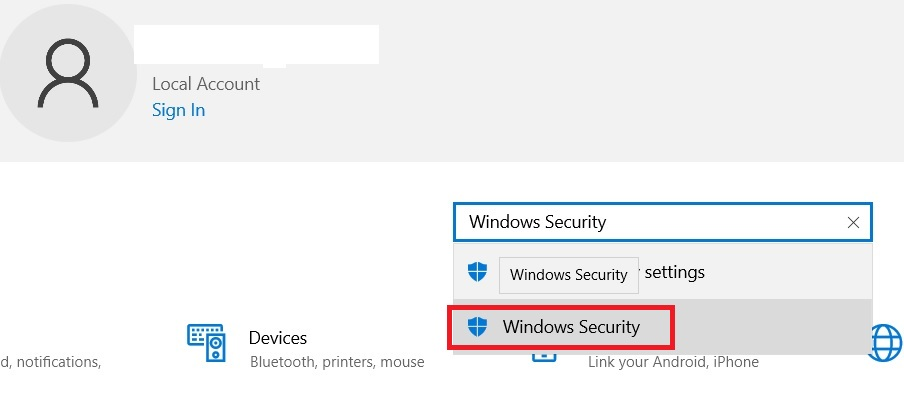

C:\Windows\system32>sc query WinDefend

SERVICE_NAME: WinDefend
        TYPE               : 10  WIN32_OWN_PROCESS
        STATE              : 4  RUNNING
                                (STOPPABLE, NOT_PAUSABLE, ACCEPTS_SHUTDOWN)
        WIN32_EXIT_CODE    : 0  (0x0)
        SERVICE_EXIT_CODE  : 0  (0x0)
        CHECKPOINT         : 0x0
        WAIT_HINT          : 0x0

C:\Windows\system32>sc qc WinDefend
[SC] QueryServiceConfig SUCCESS

SERVICE_NAME: WinDefend
        TYPE               : 10  WIN32_OWN_PROCESS
        START_TYPE         : 2   AUTO_START
        ERROR_CONTROL      : 1   NORMAL
        BINARY_PATH_NAME   : "C:\ProgramData\Microsoft\Windows Defender\Platform\4.18.26060.3008-0\MsMpEng.exe"
        LOAD_ORDER_GROUP   :
        TAG                : 0
        DISPLAY_NAME       : Microsoft Defender Antivirus Service
        DEPENDENCIES       : RpcSs
        SERVICE_START_NAME : LocalSystem

C:\Windows\System32\winver.exe
Windows 10 22H2

RAM SIZE IN GB:
C:\Windows\System32>%HOME%\..\..\bin\echo.exe "scale=3;12067 / 1024" | tr -d "\r" | bc -q
11.784


C:\Windows\System32>sc query mpssvc

SERVICE_NAME: mpssvc
        TYPE               : 20  WIN32_SHARE_PROCESS
        STATE              : 1  STOPPED
        WIN32_EXIT_CODE    : 1066  (0x42a)
        SERVICE_EXIT_CODE  : 5  (0x5)
        CHECKPOINT         : 0x0
        WAIT_HINT          : 0x0

C:\Windows\System32>

How to stop WinDefend ?


C:\Windows\System32>sc stop WinDefend
[SC] OpenService FAILED 5:

Access is denied.


C:\Windows\System32>net stop WinDefend
System error 5 has occurred.

Access is denied.


C:\Windows\System32>

Press Windows I
Search Windows Security
Click Windows Security



if i click windows security it is trying to open microsoft store but microsoft store closing automatically any thing I can do the same using browser ?

Windows r
ms-settings:windowsdefender
Click Open Windows Security
It is also trying to open microsoft store which is closing automatically


Open C:\Windows\System32\WindowsPowerShell\v1.0\powershell.exe as admin
PS C:\Windows\System32> Get-MpPreference
PS C:\Windows\System32> Set-MpPreference -DisableRealtimeMonitoring $true
Get-Process : A positional parameter cannot be found that accepts argument 'Set-MpPreference'.
At line:1 char:1
+ PS C:\Windows\System32> Set-MpPreference -DisableRealtimeMonitoring $ ...
+ ~~~~~~~~~~~~~~~~~~~~~~~~~~~~~~~~~~~~~~~~~~~~~~~~~~~~~~~~~~~~~~~~~~~~~
    + CategoryInfo          : InvalidArgument: (:) [Get-Process], ParameterBindingException
    + FullyQualifiedErrorId : PositionalParameterNotFound,Microsoft.PowerShell.Commands.GetProcessCommand
PS C:\Windows\System32> Get-AppxPackage Microsoft.SecHealthUI
PS C:\Windows\System32> Get-MpComputerStatus | Select AMRunningMode, RealTimeProtectionEnabled, IsTamperProtected
AMRunningMode RealTimeProtectionEnabled IsTamperProtected
------------- ------------------------- -----------------
Normal                             True             False
PS C:\Windows\System32>

Open gpedit.msc
Computer Configuration
  → Administrative Templates
    → Windows Components
      → Microsoft Defender Antivirus
	  here everything at right pane having:
	  Allow antivirus service to startup with normal priority
		Not configured	No